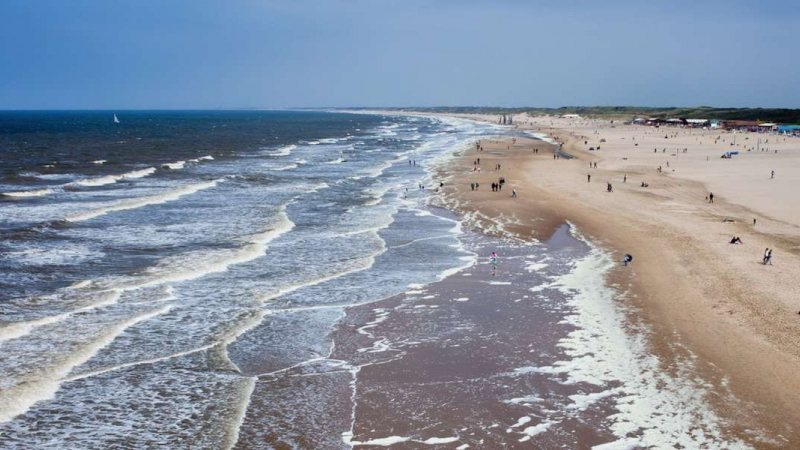

Scheveningen
Een kilometers lang strand in de achtertuin, dat is Scheveningen voor Den Haag. Vier seizoenen per jaar een heerlijke plek om te vertoeven. Met een glas Chardonnay op een loungebank in de zon of juist met zeiljack vol in de wind. Onveranderd, welk jaargetijde het ook is, blijft het effect van de frisse wind; een ontspannen, rozig en voldaan vakantiegevoel. Voor een diner bij zonsondergang leent Scheveningen zich uitermate goed. De vis komt verser dan vers zo uit zee en dat proef je. Niet alleen bij de strandtenten aan de boulevard en de restaurants van Scheveningen; de visrestaurants in de Scheveningse Haven vormen een dynamisch decor voor een sfeervol etentje.
Madurodam
 Madurodam geeft een beeld van een Nederlandse stad en de Nederlandse samenleving door middel van ruim 700 maquettes van gebouwen uit alle delen van Nederland.
Een ziekenhuis en een begraafplaats ontbreken. Sommige maquettes bewegen na inworp van een muntstuk in een muntautomaat.
Ook zijn er interactieve onderdelen waar de bezoeker zelf aan kan bijdragen zoals het sluiten van de Oosterscheldekering of het laden van containers in de Rotterdamse haven.
Sommige onderdelen bevatten auditieve informatieve toelichting over de getoonde zaken. Elke bezoeker ontvangt bij de entree een speciale pas waarmee deze toelichting kan worden geactiveerd.
Madurodam geeft een beeld van een Nederlandse stad en de Nederlandse samenleving door middel van ruim 700 maquettes van gebouwen uit alle delen van Nederland.
Een ziekenhuis en een begraafplaats ontbreken. Sommige maquettes bewegen na inworp van een muntstuk in een muntautomaat.
Ook zijn er interactieve onderdelen waar de bezoeker zelf aan kan bijdragen zoals het sluiten van de Oosterscheldekering of het laden van containers in de Rotterdamse haven.
Sommige onderdelen bevatten auditieve informatieve toelichting over de getoonde zaken. Elke bezoeker ontvangt bij de entree een speciale pas waarmee deze toelichting kan worden geactiveerd.